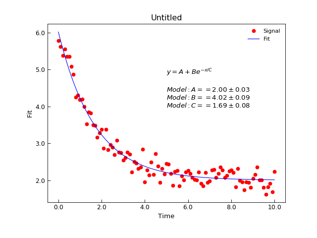

AnalysisMixin.lmfit¶
-
AnalysisMixin.lmfit(model, xcol=None, ycol=None, p0=None, sigma=None, **kargs)[source]¶ Wrapper around lmfit module fitting.
Parameters: - model (lmfit.Model) – An instance of an lmfit.Model that represents the model to be fitted to the data
- xcol (index or None) – Columns to be used for the x data for the fitting. If not givem defaults to the
Stoner.Core.DataFile.setasx column - ycol (index or None) – Columns to be used for the y data for the fitting. If not givem defaults to the
Stoner.Core.DataFile.setasy column
Keyword Arguments: - p0 (list, tuple or array) – A vector of initial parameter values to try.
- sigma (index) – The index of the column with the y-error bars
- bounds (callable) – A callable object that evaluates true if a row is to be included. Should be of the form f(x,y)
- result (bool) – Determines whether the fitted data should be added into the DataFile object. If result is True then the last column will be used. If result is a string or an integer then it is used as a column index. Default to None for not adding fitted data
- replace (bool) – Inidcatesa whether the fitted data replaces existing data or is inserted as a new column (default False)
- header (string or None) – If this is a string then it is used as the name of the fitted data. (default None)
- scale_covar (bool) – whether to automatically scale covariance matrix (leastsq only)
- output (str, default "fit") – Specifiy what to return.
Returns: The lmfit module will refurn an instance of the
lmfit.models.ModelFitclass that contains all relevant information about the fit.- The return value is determined by the output parameter. Options are
- “ffit” just the
lmfit.model.ModelFitinstance - “row” just a one dimensional numpy array of the fit paraeters interleaved with their uncertainties
- “full” a tuple of the fit instance and the row.
- “ffit” just the
See also
AnalysisMixin.curve_fit()User guide section Fitting with limitsNote
If p0 is fed a 2D array, then it assumed that you want to calculate \(\chi^2\) for different starting parameters with some variables fixed. In this mode, fitting is carried out repeatedly with each row representing one attempt with different values of the parameters. In this mode the return value is a 2D array whose rows correspond to the inputs to the rows of p0, the columns are the fitted values of the parameters with an additional column for \(\chi^2\).- Example:
"""Simple use of lmfit to fit data.""" from Stoner import Data from numpy import linspace,exp,random #Make some data x=linspace(0,10.0,101) y=2+4*exp(-x/1.7)+random.normal(scale=0.2,size=101) d=Data(x,y,column_headers=["Time","Signal"],setas="xy") d.plot(fmt="ro") # plot our data #Do the fitting and plot the result fit = d.lmfit(lambda x,A,B,C:A+B*exp(-x/C),result=True,header="Fit",A=1,B=1,C=1) d.setas="x.y" d.labels=[] d.plot(fmt="b-") # Make nice label of the parameters text=r"$y=A+Be^{-x/C}$"+"\n\n" text+="\n".join([d.format(k,latex=True) for k in ["Model:A","Model:B","Model:C"]]) d.text(5,4,text)
(Source code, png, hires.png, pdf)


{kind=link}
{kind=link}